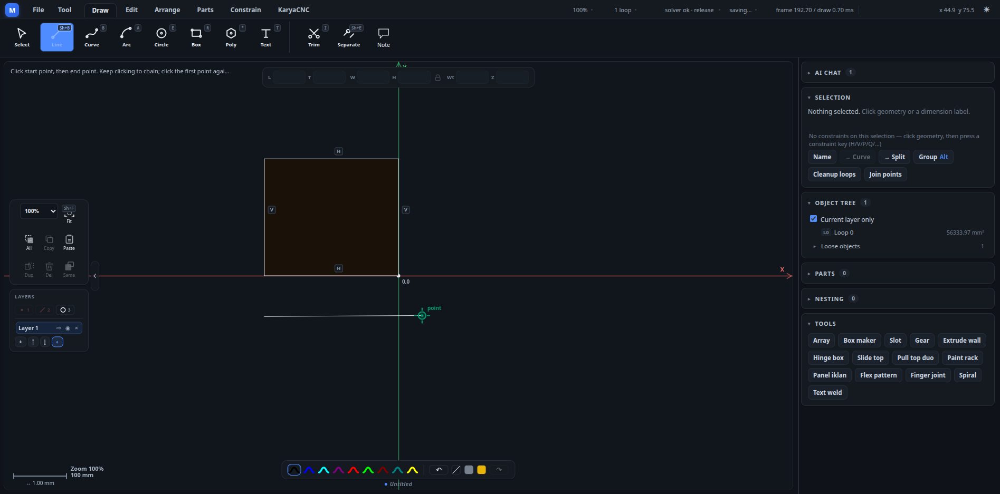

Selamat datang di Bantuan MiniSketch
MiniSketch adalah sketsa 2D berbasis batasan (constraint sketcher) yang berjalan di browser — tanpa instalasi, tanpa build step. Gambar dengan dimensi nyata (mm), tambahkan batasan geometri, buat bagian CNC dengan alat generator, susun pada lembar (nesting), dan kirim ke mesin KaryaCNC — semuanya dalam satu tab.
1. Mulai cepat (Quick Start)
- Buka MiniSketch lewat server lokal (
http://127.0.0.1:8090darinode server/serve.js) agar AI Chat dan jembatan WebSocket ke KaryaCNC lokal aktif, atau buka langsung dari disk (file://) untuk menggambar offline. - Lembar gambar kosong akan muncul dengan tema gelap. Ribbon atas berisi menu File dan Tool serta tab kerja: Draw, Edit, Arrange, Parts, Constrain, KaryaCNC.
- Pilih alat gambar di tab Draw (mis. Shift+B garis, B kurva, E lingkaran, R kotak, T teks) lalu klik di kanvas.
- Atur ukuran tepat lewat strip L / T / W / H di atas kanvas atau tambahkan dimensi (D), lalu tekan F9 bila memakai mode solver manual.
- Simpan proyek ke file
.sketchdengan Ctrl+S (atau Ctrl+Shift+S untuk nama baru). Setiap edit juga otomatis tersimpan sementara di browser.
1B. Konsep dasar CNC untuk pemula
Sebelum memotong di mesin atau menata nesting, pahami 4 aturan inti di MiniSketch:
- Loop tertutup vs garis terbuka: bentuk yang ujungnya benar-benar menyatu (mis. kotak, lingkaran, atau rangkaian garis yang kembali ke titik awal) otomatis terdeteksi sebagai loop tertutup dan diberi warna isi tipis. Nesting, Boolean, dan Extrude wall membutuhkan loop tertutup. Jika loop belum terdeteksi padahal tampak menyambung, pilih objek lalu klik Cleanup loops (Shift+L) atau Weld (Alt+W).
- Warna garis = operasi mesin: tidak ada pemetaan per layer untuk mesin. Hitam = Potong (Cut), Biru = Engrave, Merah = Drill/Gores, Hijau = Mark / Garis bantu / Lembar nesting (tidak dipotong sebagai jalur cut utama).
- Isi loop Gray & Yellow: klik di dalam loop lalu pilih Gray untuk menandai batas bahan/luar (semua di dalamnya ikut dibalik offset), atau Yellow untuk membalik arah offset satu kontur saja.
- Mode F1 / F2 / F3: F1 menggeser objek utuh, F2 (bawaan) mengedit titik/node, dan F3 memilih titik pertemuan (junction).


2. Semua fitur secara singkat
Setiap kartu di bawah membuka halaman penjelasan detail per fitur.
Draw — Menggambar
Garis, kurva Bézier, busur, lingkaran, kotak, poligon/bintang, teks, potong dan pisah.
Edit — Mengubah Objek
Transformasi, offset, geser, array, grup, boolean, join, fillet, bersihkan loop.
Arrange — Susun Objek
Rata, tengah, distribusi, dan drag wall untuk nesting manual.
Constrain — Batasan & Dimensi
Coincident, horizontal/vertikal, sejajar, tegak lurus, sama panjang, dimensi penggerak.
Tools — 13 Generator & Clone
Box maker, Hinge/Slide/Pull top, Gear, Slot, Flex pattern, Extrude wall, Spiral, Text weld, Array/Clone.
Extensions & Marketplace
Kelola alat bawaan & custom, pasang dari Marketplace, editor ber-syntax highlight, cek update, dan publish.
Parts — Part & Assembly
Buat part kaku dan gabungkan dengan mate (pin, slider, string, arc).
KaryaCNC — Kirim ke Mesin
Dialog kirim, estimasi biaya, dan warna operasi (hitam potong, merah gores, dll).
Berkas — Open / Import / Save / Export
Buka .sketch / .json, impor gabung, simpan, ekspor SVG, & Cloud Sync.
Import — SVG / PDF / CDR / DXF
Impor file vektor dengan pengaturan grup, warna, teks, dan clipping path.
Teks & Font
Objek teks, font single-line / system / imported, ukuran, jarak huruf, dan fit ke kurva.
Image Trace — Jejak Gambar
Jejakkan gambar hasil paste atau seretan menjadi kurva yang bisa diedit.
Nesting — Tata Letak Potongan
Susun loop tertutup di lembar dengan algoritma genetika + NFP di browser.
Settings — Pengaturan
Renderer, Geometry, Comments, Curves, Text, Paste, CNC, dan AI chat.
Pintasan Keyboard
Semua tombol pintas berkas, alat, edit, constraint, tampilan, dan mesin.
AI Chat (SVG & Extension)
Buat desain vektor SVG atau bangun ekstensi alat CNC custom dengan panel testing permanen & Vision.
3. Tentang aplikasi ini
- Constraint solver nyata — coincidance, horizontal/vertikal, midpoint/on-line, perpendicular, parallel, angle, aspect; tiga mode solve (saat dilepas, live saat drag, manual F9).
- Boolean eksak pada Bézier asli — union / intersect / subtract dijalankan pada geometri kubik asli, kurva tetap kurva (tidak disegi poligon).
- Tiga belas alat generator parametrik — kotak, gear, finger joint, living hinge, spiral, slot, dan lain-lain. Double-click hasil untuk membuka dialog parameternya kembali dan rebuild di tempat.
- Nesting dan image tracing bawaan — mesin nest GA + NFP lokal (port KaryaCNC nestjs2) dan tracer raster→kurva dengan pengaturan yang bisa dibuka kembali.
- Dua bahasa, satu saklar — File → Lang: English / Indonesia menuliskan ulang antarmuka, panel AI, dan dokumentasi ini.
- Local-first dan pribadi — autosave ke browser (dengan crash-recovery
.bak), simpan JSON.sketchyang dapat dibaca, ekspor SVG, dan sinkronisasi cloud opsional lewat akun Google. AI chat adalah bring-your-own-key; tidak ada kunci yang dikirim bersama repositori. - Zero build — tag
<script>biasa, berkas statis, bekerja langsung dari disk.
http://127.0.0.1:8090/index.html saat server berjalan).Welcome to MiniSketch Help
MiniSketch is a browser-based 2D constraint sketcher with zero installation and no build step. Draw in real millimeters, add geometric constraints, build parametric CNC parts, nest loops onto sheets, and send jobs straight to KaryaCNC — all in one tab.
1. Quick Start
- Open MiniSketch via the local server (
http://127.0.0.1:8090usingnode server/serve.js) to enable AI Chat and the local KaryaCNC WebSocket bridge, or open directly from disk (file://) for offline sketching. - A dark empty sheet appears. The top ribbon holds the File and Tool menus plus workflow tabs: Draw, Edit, Arrange, Parts, Constrain, and KaryaCNC.
- Pick a drawing tool on the Draw tab (e.g. Shift+B line, B curve, E circle, R box, T text) and click on the canvas.
- Set exact sizes via the floating L / T / W / H strip above the canvas or add dimensions (D), then press F9 when using manual solver mode.
- Save your project as a
.sketchfile with Ctrl+S (or Ctrl+Shift+S to save a new copy). Edits are also autosaved locally in your browser.
1B. Core CNC Concepts for Beginners
Before cutting or nesting parts, keep these four MiniSketch rules in mind:
- Closed loops vs. open paths: shapes whose endpoints join seamlessly (boxes, circles, or closed line chains) are automatically detected as closed loops with a subtle interior fill. Nesting, Booleans, and Extrude wall require closed loops. If a connected shape does not show a fill, select it and run Cleanup loops (Shift+L) or Weld (Alt+W).
- Stroke color = machine operation: colors map directly to CNC operations rather than layers. Black = Cut, Blue = Engrave, Red = Drill/Score, Green = Mark / Construction guide / Nesting sheet (not cut as a main pass).
- Gray & Yellow loop fills: click inside a closed loop and choose Gray to mark an outer material boundary (inner cuts flip offset direction automatically), or Yellow to invert offset direction on a single contour.
- F1 / F2 / F3 selection modes: F1 drags whole objects, F2 (default) edits points/nodes, and F3 picks junctions.
2. Features at a Glance
Click any card below to open its dedicated feature guide.
Draw — Sketching Tools
Lines, Bézier curves, arcs, circles, boxes, polygons/stars, text, trim, and separate.
Edit — Modify Objects
Transform, offset, move, array, group, exact booleans, join, fillet, and cleanup.
Arrange — Align & Layout
Align, center, distribute spacing, Insert into green sheet, and Drag wall manual nesting.
Constrain — Constraints & Dim.
Coincident, horizontal/vertical, parallel, perpendicular, equal, and driving dimensions.
Tools — 13 Generators & Clone
Box maker, Hinge/Slide/Pull top, Gear, Slot, Flex pattern, Extrude wall, Spiral, Text weld, Array/Clone.
Extensions & Marketplace
Manage built-in & custom tools, browse Marketplace, edit with syntax highlighting, check updates, and publish.
Parts — Rigid Parts & Assembly
Freeze geometry into rigid parts and connect mechanisms with mates (pin, slider, string, arc).
KaryaCNC — Send to Machine
Send dialog, cutting cost estimator, and machine operation stroke colors.
Files — Open / Save / Export
Open .sketch / .json, merge imports, save locally, export SVG, and optional Cloud Sync.
Import — SVG / PDF / CDR / DXF
Import vector files with group preservation, color mapping, text modes, and clipping paths.
Text & Fonts
Text objects, single-line / system / imported fonts, tracking, outline detail, and curve fitting.
Image Trace — Bitmap to Vector
Trace pasted or dropped bitmap images into editable vector curves locally.
Nesting — Sheet Packing
Pack closed loops onto green sheets using local genetic algorithms + NFP.
Settings — Preferences
Renderer, Geometry tolerances, Comments, Curves, Text, Paste, CNC, and AI chat.
Keyboard Shortcuts
Complete reference for file, drawing, editing, constraint, view, and machine hotkeys.
AI Chat (SVG & Extension)
Generate CNC-ready SVG vectors or custom parametric Extensions with permanent testing panel & Vision.
3. About MiniSketch
- Real constraint solver — coincidence, horizontal/vertical, midpoint/on-line, perpendicular, parallel, angle, aspect; three solve modes (on release, live while dragging, or manual F9).
- Exact Booleans on native Béziers — union / intersect / cut operate directly on cubic curves so arcs stay smooth instead of flattening to polygons.
- 13 parametric generators — boxes, gears, finger joints, living hinges, spirals, slots, and more. Double-click any generated result to reopen its parameter dialog and rebuild in place.
- Built-in nesting & image tracing — local GA + NFP sheet packer and raster-to-curve tracer with editable parameters.
- Dual language, one switch — File → Lang: English / Indonesia switches the entire UI, AI panel, and this documentation seamlessly.
- Local-first & private — browser autosave (with crash-recovery
.bak), readable JSON.sketchfiles, SVG export, and optional Google Cloud Sync. AI chat is bring-your-own-key; no API keys ship with the repository. - Zero build — plain static scripts that work directly from disk or localhost.
http://127.0.0.1:8090/index.html when running the local server).